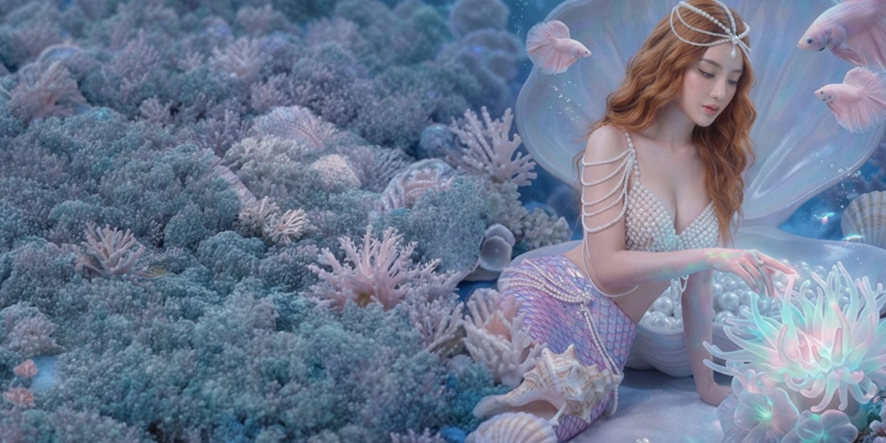

Setup
တစ်ခါချိန်ညှိရုံနဲ့ အမြဲအဆင်သင့် ဖြစ်နေမယ်
RUNNINGHUB ENTERPRISE

Reference Library
Look ၆၃၇ မျိုးထဲက ကြိုက်တာ ရွေးလိုက်ရုံ — ချက်ချင်းစနိုင်

One-Tap Studio
တစ်ချက်နှိပ်ရုံနဲ့ Studio အဆင့် ပရော်ဖက်ရှင်နယ် look

Retouch Pro
မူရင်းအလှ မပျက်စေဘဲ ချောမွေ့ကြည်လင် စေမယ်

Freeform Create
စိတ်ကူးထဲက မြင်ကွင်းတိုင်းကို လွတ်လပ်စွာ ဖန်တီးပါ
GENERATE
တိုက်ရိုက် ထုတ်နေပါတယ် — စက္ကန့် ၂၀-၆၀ လောက် စောင့်ပါ…

Image to Video
ဓာတ်ပုံတွေကို အသက်ဝင် လှုပ်ရှားစေမယ်
GENERATE

Video Upscale
ဗီဒီယိုအရည်အသွေး နှစ်ဆမြှင့် — ပိုကြည် ပိုပြတ်သား
GENERATE

BATCH LOOKS
ဓာတ်ပုံအားလုံးကို Look တစ်ခုတည်းနဲ့ တစ်ပြိုင်နက် ပြင်မယ်

Text to Image
စာသားတစ်ကြောင်းကနေ ပရော်ဖက်ရှင်နယ်ပုံ ဖြစ်လာမယ်
GENERATE

My Gallery
ဖန်တီးခဲ့သမျှ အမှတ်တရတွေ ဒီမှာအမြဲ စုစည်းထား
MY GALLERY
ထုတ်ပြီးသမျှ ရလဒ်တွေ ဒီမှာ အလိုအလျောက် စုသိမ်းထားတယ် (ဖုန်းထဲမှာပဲ) — reload လုပ်လည်း မပျောက်ဘူး။
ရလဒ် မရှိသေးပါ — Generate လုပ်ပြီးရင် ဒီမှာ ရောက်လာမယ်။